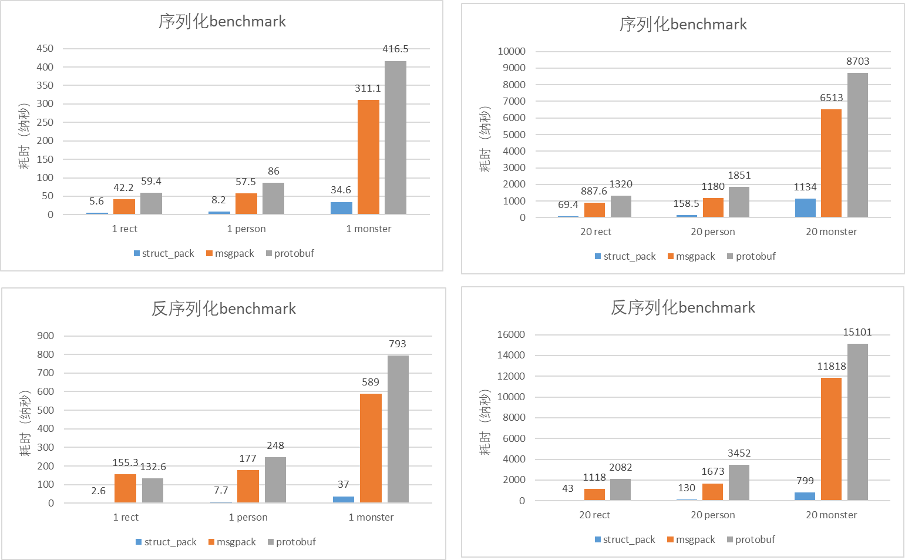

struct_pack是一个以零成本抽象，高度易用为特色序列化库。通常情况下只需一行代码即可完成复杂结构体的序列化/反序列化。用户无需定义任何DSL，宏或模板代码，struct_pack可通过编译期反射自动支持对C++结构体的序列化。其综合性能比protobuf，msgpack大幅提升(详细可以看benchmark部分)。
下面，我们以一个简单的对象为例展示struc_pack的基本用法。
struct person {
int64_t id;
std::string name;
int age;
double salary;
};
person person1{.id = 1, .name = "hello struct pack", .age = 20, .salary = 1024.42};
序列化
基本用法
STRUCT_PACK_INLINE Buffer serialize(const Args &...args)
指定序列化返回的容器类型
auto result = struct_pack::serialize<std::string>(person1);
将序列化结果保存到已有的容器尾部
std::string result="The next line is struct_pack serialize result.\n";
std::size_t STRUCT_PACK_INLINE serialize_to(Byte *buffer, std::size_t len, const Args &...args) noexcept
将序列化结果保存到指针指向的内存中。
auto sz=struct_pack::get_needed_siarray(person1);
std::unique_ptr array=std::make_unique<char[]>(sz);
多参数序列化
将序列化结果保存到输出流
std::ofstream writer("struct_pack_demo.data",
std::ofstream::out | std::ofstream::binary);
反序列化
基本用法
auto person2 = deserialize<person>(buffer);
assert(person2);
assert(person2.value()==person1);
从指针指向的内存中反序列化
auto person2 = deserialize<person>(buffer.data(),buffer.size());
assert(person2);
assert(person2.value()==person1);
反序列化（将结果保存到已有的对象中）
person person2;
std::errc ec = deserialize_to(person2, buffer);
assert(ec==std::errc{});
assert(person2==person1);
多参数反序列化
auto person2 = deserialize<int64_t,std::string,int,double>(buffer);
assert(person2);
auto &&[id,name,age,salary]=person2.value();
assert(person1.id==id);
assert(person1.name==name);
assert(person1.age==age);
assert(person1.salary==salary);
从输入流中反序列化
std::ifstream ifs("struct_pack_demo.data",
std::ofstream::in | std::ofstream::binary);
auto person2 = struct_pack::deserialize<person>(ifs);
assert(person2 == person1);
部分反序列化
有时候只想反序列化对象的某个特定的字段而不是全部，这时候就可以用部分反序列化功能了，这样可以避免全部反序列化，大幅提升效率。
auto name = get_field<person, 1>(buffer.data(), buffer.size());
assert(name);
assert(name.value() == "hello struct pack");
支持序列化所有的STL容器、自定义容器和optional
含各种容器的对象序列化
enum class Color { red, black, white };
struct complicated_object {
Color color;
int a;
std::string b;
std::vector<person> c;
std::list<std::string> d;
std::deque<int> e;
std::map<int, person> f;
std::multimap<int, person> g;
std::set<std::string> h;
std::multiset<int> i;
std::unordered_map<int, person> j;
std::unordered_multimap<int, int> k;
std::array<person, 2> m;
person n[2];
std::pair<std::string, person> o;
std::optional<int> p;
std::unique_ptr<int> q;
};
struct nested_object {
int id;
std::string name;
person p;
complicated_object o;
};
nested_object nested{.id = 2, .name = "tom", .p = {20, "tom"}, .o = {}};
auto nested2 = deserialize(buffer.data(), buffer.size());
assert(nested2)
assert(nested2==nested1);
自定义功能支持
自定义类型的序列化
struct_pack支持序列化自定义类型。
template <typename Key, typename Value>
struct my_map : public std::map<Key, Value> {};
my_map<int, std::string> map1;
map1.emplace(1, "tom");
map1.emplace(2, "jerry");
absl::flat_hash_map<int, std::string> map2 =
{{1, "huey"}, {2, "dewey"}, {3, "louie"},};
关于自定义类型的更多细节，请见：
struct_pack的类型系统
序列化到自定义的输出流
该流需要满足以下约束条件：
template <typename T>
concept writer_t = requires(T t) {
t.write((const char *)nullptr, std::size_t{});
};
例如：
struct fwrite_stream {
FILE* file;
bool write(const char* data, std::size_t sz) {
return fwrite(data, sz, 1, file) == 1;
}
fwrite_stream(const char* file_name) : file(fopen(file_name, "wb")) {}
~fwrite_stream() { fclose(file); }
};
fwrite_stream writer("struct_pack_demo.data");
从自定义的输入流中反序列化
该流需要满足以下约束条件：
template <typename T>
concept reader_t = requires(T t) {
t.read((char *)nullptr, std::size_t{});
t.ignore(std::size_t{});
t.tellg();
};
此外，如果该流还额外支持read_view函数，则支持对string_view的零拷贝优化。
template <typename T>
concept view_reader_t = reader_t<T> && requires(T t) {
{ t.read_view(std::size_t{}) } -> std::convertible_to<const char *>;
};
示例代码如下所示：
struct fread_stream {
FILE* file;
bool read(char* data, std::size_t sz) {
return fread(data, sz, 1, file) == 1;
}
bool ignore(std::size_t sz) { return fseek(file, sz, SEEK_CUR) == 0; }
std::size_t tellg() {
return ftell(file);
}
fread_stream(const char* file_name) : file(fopen(file_name, "rb")) {}
~fread_stream() { fclose(file); }
};
fread_stream ifs("struct_pack_demo.data");
auto person2 = struct_pack::deserialize<person>(ifs);
assert(person2 == person);
支持可变长编码：
{
std::vector<struct_pack::var_int32_t> vec={-1,0,1,2,3,4,5,6,7};
auto buffer = std::serialize(vec);
}
{
std::vector<struct_pack::uint64_t> vec={1,2,3,4,5,6,7,UINT64_MAX};
auto buffer = std::serialize(vec);
}
benchmark
测试方法
待序列化的对象已经预先初始化，存储序列化结果的内存已经预先分配。对每个测试用例。我们运行一百万次序列化/反序列化，对结果取平均值。
测试对象
- 含有整形、浮点型和字符串类型person对象
struct person {
int64_t id;
std::string name;
int age;
double salary;
};
- 含有十几个字段包括嵌套对象的复杂对象monster
enum Color : uint8_t { Red, Green, Blue };
struct Vec3 {
float x;
float y;
float z;
};
struct Weapon {
std::string name;
int16_t damage;
};
struct Monster {
Vec3 pos;
int16_t mana;
int16_t hp;
std::string name;
std::vector<uint8_t> inventory;
Color color;
std::vector<Weapon> weapons;
Weapon equipped;
std::vector<Vec3> path;
};
- 含有4个int32的rect对象
struct rect {
int32_t x;
int32_t y;
int32_t width;
int32_t height;
};
测试环境
Compiler: Alibaba Clang 13
CPU: (Intel(R) Xeon(R) Platinum 8163 CPU @ 2.50GHz)
测试结果

向前/向后兼容性
当对象增加新的字段时，怎么保证兼容新旧对象的解析呢？当用户需要添加字段时，只需要在**新对象末尾** 增加新的 struct_pack::compatible<T> 字段即可。
以person对象为例：
struct person {
int age;
std::string name;
};
struct person1 {
int age;
std::string name;
struct_pack::compatible<int32_t> id;
struct_pack::compatible<bool> maybe;
};
struct_pack保证这两个类可以通过序列化和反序列化实现安全的相互转换，从而实现了向前/向后的兼容性。
为什么struct_pack更快？
- 精简的类型信息，高效的类型校验。MD5计算在编译期完成，运行时只需要比较32bit的hash值是否相同即可。
- struct_pack是一个模板库，鼓励编译器积极的内联函数。
- 0成本抽象，不会为用不到的特性付出运行时代价。
- struct_pack的内存布局更接近于C++结构体原始的内存布局，减少了序列化反序列化的工作量。
- 编译期类型计算允许struct_pack根据不同的类型生成不同的代码。因此我们可以根据不同的类型的特点做优化。例如对于连续容器可以直接memcpy，对于string_view反序列化时可以采用零拷贝优化。
附录
关于struct_pack类型系统
struct_pack的类型系统
关于struct_pack的编码与布局
struct_pack的编码与布局
测试代码
请见 benchmark.cpp
 1.9.6
1.9.6